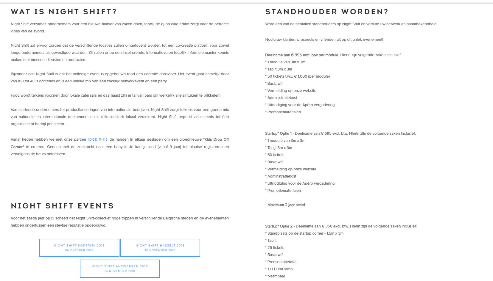
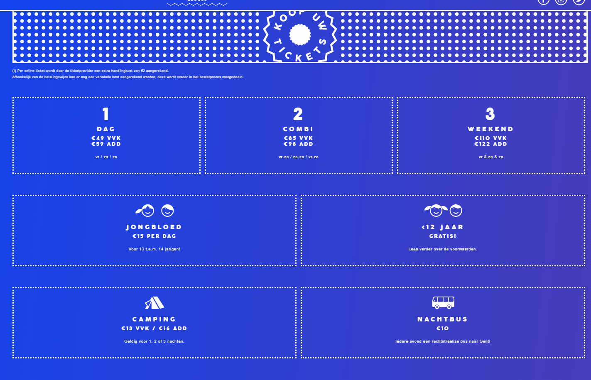

Concurrentie analyse
The Night Shift
LINK: http://www.night-shift.be/nl
PLUS
Homepage met filmpje die korte uitleg geeft over het evenement
Luchtige website ondanks de vele info
Goede afwisseling van tekst en afbeeldingen/foto’s
Mogelijkheid tot meerdere talen
Overzichtelijke navigatie balk
MIN
Nodigt niet uit om info te lezen
Te weinig verschil tussen font van belangrijke zaken en het font voor minder belangrijke zaken
Begin beeld trekt de meeste aandacht
Onduidelijk of er een mogelijkheid is om te scrollen

We Can Dance
LINK: https://www.wecandance.be
PLUS
Overgang tussen verschillende thema’s op de one-page (zie achtergrond)
Duidelijk tickets bestellen-
Zeer overzichtelijk en duidelijk menu voor tickets
Overzichtelijke nieuwsfeed
Duidelijk onderscheidt tussen belangrijke zaken en minder belangrijke zaken (verschillende corps/font)
Pijl die duidelijk maakt dat de pagina doorloopt
MIN
Te grote lege plaatsen (oogt soms niet als een geheel)
Weinig nuttige informatie
Pagina met de geschiedenis eerder overbodig
Cactus Festival
LINK: http://www.cactusfestival.be/2018/home_nl.asp
PLUS
Een volledig menu (alles is aanwezig en overzichtelijk)

Duidelijk ticket overzicht

duidelijk waar je wat moet vinden
De vele informatie wordt duidelijk opgedeeld, waardoor alles overzichtelijk blijft
MIN
Slideshow als startpagina maakt de website redelijk druk
Continue veranderen van kleuren zorgt voor zeer onrustig effect
Niet duidelijk dat de website doorloopt